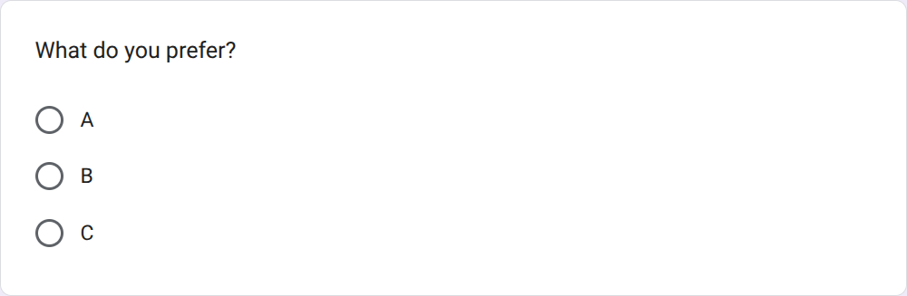
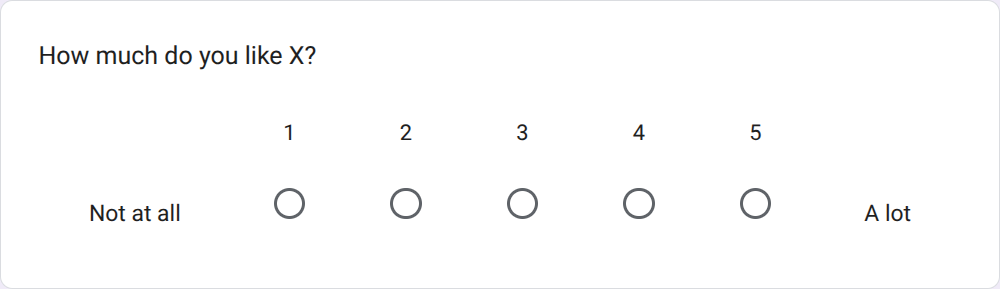

3.1. Methods 3 Phase 1 Processing¶
The goals of this page is to transparantly process the data from the 'Methods 3', phase 1.
The raw data can be found at data_set_1_raw.csv,
where the resulting processed data can be found at
data_set_1_merged.csv,
Filtered out are:
- administrative questions, e.g. email addresses
- duplicates
Overview of the steps shown here
An overview of the steps is shown here:
flowchart TB
data_set_in[data_set_1_raw.csv]
submissions[17 submissions]
questions_with_duplicates[43 questions with duplicates]
unique_questions[41 unique questions]
data_set_out[data_set_1_merged.csv]
data_set_in --> |Read| submissions
submissions --> |Step 1: Split up in questions, filter for usefulness| questions_with_duplicates
questions_with_duplicates --> |Step 2: Remove duplicates| unique_questions
unique_questions --> |Save| data_set_out3.1.1 Step 1: Split up in questions, filter for usefulness¶
Here is are the verbatim suggestions without time stamps, with an identifier added.
The first denotes the set number, the second number denotes the ID within that set.
Table 3.1.0: overview of all sets
| Set number | Description |
|---|---|
| 1 | All submissions |
| 2 | All questions |
| 3 | All unique questions |
Table 3.1.0: overview of all sets
Table 3.1.1: overview of all suggestions
| ID | Suggestion |
|---|---|
| 1.1 | STF form here https://docs.google.com/forms/d/e/1FAIpQLSejIRO_EHppHI9vC9QCoXFOM3DsEPU43-Pa-S-Kj5coZTuZtA/viewform?usp=sharing |
| 1.2 | For each learning outcome, have the participants self-assess if they were fulfilled |
| 1.3 | What is one thing you learned that you didn't expect to? |
| 1.4 | What part of the training was most useful for your work/research? |
| 1.5 | How did you hear about this workshop? (e.g., email, community website, colleague, social media, denbi event page) |
| 1.6 | Was there anything you felt was missing from the workshop? (free text) |
| 1.7 | Do you feel you can apply the knowledge gained in your daily work? (Yes, Partially, No) If partially or not, would you be interested in a more advanced workshop focused on a specific topic? (free text) |
| 1.8 | The general feeling after the completion, What was difficult to understand, what would you change if you could |
| 1.9 | - Was the course well organised? yes, no or a scale -Was the course content well structured and balanced between theory and hands on?yes, no or a scale -Were the material supporting the course well designed and easy to use? yes, no or a scale -What were the strengths of this course ? free text -What aspects of this course could be improved (changes, additions) ? free text -Do you have any feedback for the trainer(s), which could be positive comments or things to improve? They can be related to the effectiveness of training delivery, oral expression, ability to answer questions, attitudes, domain expertise, ease in facilitating training, or any other. free text -Were you able to transpose and apply the theorical and practical knowledge into your own research work/scientific question? scale and or free text |
| 1.10 | How useful were the training materials (slides, datasets, exercises)? Scale from 1 (not) to 10 (very much) |
| 1.11 | What improvements would you suggest for the materials? Free text |
| 1.12 | I feel confident applying what I learned in my future work. Scale from 1 (not) to 10 (very much) |
| 1.13 | What would help you apply this training more effectively? Free text |
| 1.14 | I suggest to add: 1. Was the theoretical content useful to carry out the exercises? 2. Were there sufficient trainers and helpers to answer your questions? |
| 1.15 | The question 'Any (other) feedback?' with a textbox that can be edited freely (i.e. no max count of words) |
| 1.16 | For all teachers: 'Say something positive about teacher X' and 'Say something teacher X can improve', both with text boxes that can be edited freely (i.e. no min nor max word count) |
| 1.17 | For all learning outcomes: Give you confidence levels of the following statements, using this scale: 0: I don't know even what this is about ...? 1: I have no confidence I can do this 2: I have low confidence I can do this 3: I have some confidence I can do this 4: I have good confidence I can do this 5: I absolutely can do this! Then let people pick either no answer or one of these answers. |
Table 3.1.1: overview of all suggestions
The goal of this step is to split up suggestions into questions that help assess course quality (i.e. filter out administrative questions). Additionally, an 'answer type' will be assigned to each suggestion. See table 3.1.2 for the answer types, descriptions and examples.
Table 3.1.2: description of all answer types
| Answer type | Description | GUI element name | Example |
|---|---|---|---|
RG1 |
A multiple choice answer where 1 option must be chosen | A radio button group |  |
RG01 |
A multiple choice answer where 0 or 1 options can be chosen | A radio button group |  |
FT1 |
FTN, 1 line | A line edit |  |
FTN |
FTN, any amount of lines | A text edit |  |
CG1N |
A multiple choice answer where 1 or more options can be checked | A checkbox group |  |
CYN |
A checkbox that can be checked yes/no | A checkbox |  |
S5 |
A scale with 5 elements | A slider |  |
Sx |
A scale with x elements |
A slider | N/A |
Su |
A scale with an unknown/unspecified number of elements | A slider | N/A |
U |
Unknown/unspecified | N/A | N/A |
Description of all answer types"
Duplicates will be removed in the next step.
Submission 1.1¶
| ID | Suggestion |
|---|---|
| 1.1 | STF form here https://docs.google.com/forms/d/e/1FAIpQLSejIRO_EHppHI9vC9QCoXFOM3DsEPU43-Pa-S-Kj5coZTuZtA/viewform?usp=sharing |
This suggestion contains a link to the NBIS Short Term Feedback (STF) survey.
Here I collect all questions from that survey and determine if these are useful to assess course quality
| ID | Suggestion |
|---|---|
| 1.1.1 | [FT1] Event code |
This is an adminstrative question and will be filtered out.
| ID | Suggestion |
|---|---|
| 1.1.2 | [RG1] What is your career stage? - Undergraduate student - Masters student - PhD candidate - Postdoctoral researcher - Senior scientist/Principal investigator - Research assistant/ Technician / Support staff - Research engineer/Staff scientist/Technical scientist - Industry scientist - Other: [FT1] |
This multiple choice question ('MCQ') is an adminstrative question and will be filtered out.
| ID | Suggestion |
|---|---|
| 1.1.3 | [CG1N] University/Organisation. Please select all relevant choices. - Chalmers - Göteborgs Universitet - Karolinska Institutet - Kungliga Tekniska Högskolan, KTH - Linköpings Universitet - Luleå Universitet - Lunds Universitet - Naturhistoriska Riksmuseet - Örebro Universitet - Stockholms Universitet - Sveriges lantbruksuniversitet, SLU - Umeå Universitet - Uppsala Universitet - SciLifeLab - Other: [FT1] |
This is an adminstrative question and will be filtered out.
| ID | Suggestion |
|---|---|
| 1.1.4 | [RG1] What is your gender? - Man - Woman - Prefer not to say - Non-binary - Other: [FT1] |
This is an adminstrative question and will be filtered out.
| ID | Suggestion |
|---|---|
| 1.1.5 | [RG1] Have you used the tools/resources covered in the course before? - Never - unaware of them - Never - used others - Never - aware of them, but not used them - Occasionally (once in a while to monthly) - Frequently (weekly to daily) |
This is a question to assess course quality, as it is part of a session
called 'Quality metrics'. It will be labelled 2.1.
On its own, asking learners to share if they used a certain tool before is useless in improving a course, even though it may to get an idea of curiousity or initial knowledge.
However, together with a question to ask the learner to if they will use the tools again may be a way to get an idea of course quality, expressed in the change of (likelihood of) using tools.
| ID | Suggestion |
|---|---|
| 1.1.6 | [RG1] Will you use the tools/resources covered in the course again? - Yes - No - Maybe |
This is a question to assess course quality, as it is part of a session
called 'Quality metrics'. It will be labelled 2.2.
| ID | Suggestion |
|---|---|
| 1.1.7 | [RG1] Would you recommend this course? - Yes - No - Maybe |
This is a question to assess course quality, as it is part of a session
called 'Quality metrics'. It will be labelled 2.3.
| ID | Suggestion |
|---|---|
| 1.1.8 | [RG1] What is your overall rating for the course? - Excellent (5) - Very Good (4) - Good (3) - Satisfactory (2) - Poor (1) |
This is a question to assess course quality, as it is part of a session
called 'Quality metrics'. It will be labelled 2.4.
| ID | Suggestion |
|---|---|
| 1.1.9 | [FTN] What part of the training did you enjoy the most? |
This is a question to assess course quality. It will be labelled 2.5.
| ID | Suggestion |
|---|---|
| 1.1.10 | [FTN] What part of the training did you enjoy the least? |
This is a question to assess course quality. It will be labelled 2.6.
| ID | Suggestion |
|---|---|
| 1.1.11 | [RG1] The balance of theoretical and practical content was - Too theoretical - Too practical - About right |
This is a question to assess course quality. It will be labelled 2.7.
| ID | Suggestion |
|---|---|
| 1.1.12 | [RG1] How do you rate the pre-course information given? - 1 (Very unsatisfactory/Not useful) - 2 - 3 - 4 - 5 (Very good/Very useful) |
This is a question to assess course quality. It will be labelled 2.8.
| ID | Suggestion |
|---|---|
| 1.1.13 | [RG1] Please rate each session of the course - Did not attend - Poor (1) - Satisfactory (2) - Good (3) - Very Good (4) - Excellent (5) - Other: [FT1] |
This is a question to assess course quality. It will be labelled 2.9.
| ID | Suggestion |
|---|---|
| 1.1.14 | [FTN] Comments on teaching staff. Help our teaching staff to improve by providing constructive feedback |
This is a question to assess course quality. It will be labelled 2.10.
| ID | Suggestion |
|---|---|
| 1.1.15 | [RG1] Was the course held at a teaching level matching your training? Please describe in "Other" if you want to give any additional information to the Course leader(s) - Yes - No - Other: [FT1] |
This is a question to assess course quality. It will be labelled 2.11.
| ID | Suggestion |
|---|---|
| 1.1.16 | [FTN] Statements regarding what participants could do before the training event (customised to a specific training) |
This is a question to assess course quality. It will be labelled 2.12.
On its own, asking learners to self-assess the learning outcomes is useless in improving a course, even though it does help establish course relevancy.
However, together with a question to ask the learner to self-assess the learning outcomes at the end of a course, this is way to get an idea of course quality, expressed in the change of self-rated confidence in the learning outcomes.
| ID | Suggestion |
|---|---|
| 1.1.17 | [FTN] Statements regarding what participants can do after the training event (customised to a specific training) |
This is a question to assess course quality. It will be labelled 2.13.
| ID | Suggestion |
|---|---|
| 1.1.18 | [FTN] What other topics would you like to see covered in the future? |
This is an adminstrative question and will be filtered out.
I do see how this question may indirectly assesses course quality: if topics are suggested for future courses, this may somehow be correlated to higher course quality of the course given.
| ID | Suggestion |
|---|---|
| 1.1.19 | [FTN] Any other comments? |
This is a question to assess course quality. It will be labelled 2.15.
| ID | Suggestion |
|---|---|
| 1.1.20 | [RG1] What would be the prefered length of the course? - 1 day - 2 days - 3 days - 4 days - 5 days |
This not to be a question to assess course quality: this question asks the learners for their preferences, which may be useful to help change the duration of a course. It will be filtered out.
| ID | Suggestion |
|---|---|
| 1.1.21 | [RG1] What is the best format for this course? - Onsite - Online - Online but spaced out - Other: [FT1] |
This is not a question to assess course quality: this question asks the learners for their preferences, which may be useful to help change the format of a course. It will be filtered out.
| ID | Suggestion |
|---|---|
| 1.1.22 | [RG1] How did you like the localities of the course (rooms and surrondings)? - 1 (Not at all) - 2 - 3 - 4 - 5 (Very much) |
This is a question to assess course quality, as it helps evaluate
the quallity of the learning environment It will be labelled 2.41.
| ID | Suggestion |
|---|---|
| 1.1.23 | [RG1] How did you like the lunch(es) and "fika(s)"? - 1 (Not at all) - 2 - 3 - 4 - 5 (Very much) |
I consider this not to be a question to assess course quality. It will be filtered out.
| ID | Suggestion |
|---|---|
| 1.1.24 | [FTN] Any other comments? |
I consider this not to be a question to assess course quality, as it is part of a 'Training logistics' session. Taking a look at the other questions in that session, this question is about any other comments on the training logistics. That means that this is not a question about course quality. It will be filtered out.
Submission 1.2¶
| ID | Suggestion |
|---|---|
| 1.2 | For each learning outcome, have the participants self-assess if they were fulfilled |
This is a question to assess course quality. It is unclear in what form the question needs to be answered: should it be a yes/no checkbox, or a scale?
It will be labelled 2.16.
Submission 1.3¶
| ID | Suggestion |
|---|---|
| 1.3 | What is one thing you learned that you didn't expect to? |
This is a question to assess course quality. It will be labelled 2.17.
Submission 1.4¶
| ID | Suggestion |
|---|---|
| 1.4 | What part of the training was most useful for your work/research?` |
This is a question to assess course quality. It will be labelled 2.18.
Submission 1.5¶
| ID | Suggestion |
|---|---|
| 1.5 | How did you hear about this workshop? (e.g., email, community website, colleague, social media, denbi event page) |
This is an adminstrative question and will be filtered out.
I do see how this question may indirectly assesses course quality: if colleagues recommend the course, this may somehow be correlated to higher course quality.
Submission 1.6¶
| ID | Suggestion |
|---|---|
| 1.6 | Was there anything you felt was missing from the workshop? (free text) |
This is a question to assess course quality. It will be labelled 2.19.
Submission 1.7¶
| ID | Suggestion |
|---|---|
| 1.7.1 | Do you feel you can apply the knowledge gained in your daily work? (Yes, Partially, No) |
This is a question to assess course quality. It will be labelled 2.20.
| ID | Suggestion |
|---|---|
| 1.7.2 | If partially or not, would you be interested in a more advanced workshop focused on a specific topic? (free text) |
This is an adminstrative question and will be filtered out.
I do see how this question may indirectly assesses course quality: if there is a desire to do a follow-up workshop, this may somehow be correlated to higher course quality.
Submission 1.8¶
| ID | Suggestion |
|---|---|
| 1.8.1 | The general feeling after the completion |
This is a question to assess course quality. It will be labelled 2.21.
| ID | Suggestion |
|---|---|
| 1.8.2 | What was difficult to understand |
This is a question to assess course quality. It will be labelled 2.22.
| ID | Suggestion |
|---|---|
| 1.8.3 | what would you change if you could |
This is a question to assess course quality. It will be labelled 2.23.
Submission 1.9¶
| ID | Suggestion |
|---|---|
| 1.9.1 | Was the course well organised? yes, no or a scale |
This is a question to assess course quality. It will be labelled 2.24.
| ID | Suggestion |
|---|---|
| 1.9.2 | Was the course content well structured and balanced between theory and hands on? yes, no or a scale |
This is a question to assess course quality. It will be labelled 2.25.
| ID | Suggestion |
|---|---|
| 1.9.3 | Were the material supporting the course well designed and easy to use? yes, no or a scale |
This is a question to assess course quality. It will be labelled 2.26.
| ID | Suggestion |
|---|---|
| 1.9.4 | What were the strengths of this course ? free text |
This is a question to assess course quality. It will be labelled 2.27.
| ID | Suggestion |
|---|---|
| 1.9.5 | What aspects of this course could be improved (changes, additions) ? free text |
This is a question to assess course quality. It will be labelled 2.28.
| ID | Suggestion |
|---|---|
| 1.9.6 | Do you have any feedback for the trainer(s), which could be positive comments or things to improve? They can be related to the effectiveness of training delivery, oral expression, ability to answer questions, attitudes, domain expertise, ease in facilitating training, or any other. free text |
This is a question to assess course quality. It will be labelled 2.29.
| ID | Suggestion |
|---|---|
| 1.9.7 | Were you able to transpose and apply the theorical and practical knowledge into your own research work/scientific question? scale and or free text` |
This is a question to assess course quality. It will be labelled 2.30.
Submission 1.10¶
| ID | Suggestion |
|---|---|
| 1.10 | How useful were the training materials (slides, datasets, exercises)? Scale from 1 (not) to 10 (very much) |
This is a question to assess course quality. It will be labelled 2.31.
Submission 1.11¶
| ID | Suggestion |
|---|---|
| 1.11 | What improvements would you suggest for the materials? Free text |
This is a question to assess course quality. It will be labelled 2.32.
Submission 1.12¶
| ID | Suggestion |
|---|---|
| 1.12 | I feel confident applying what I learned in my future work. Scale from 1 (not) to 10 (very much) |
This is a question to assess course quality. It will be labelled 2.33.
Submission 1.13¶
| ID | Suggestion |
|---|---|
| 1.13 | What would help you apply this training more effectively? Free text |
This is a question to assess course quality. It will be labelled 2.34.
Submission 1.14¶
| ID | Suggestion |
|---|---|
| 1.14.1 | Was the theoretical content useful to carry out the exercises? |
This is a question to assess course quality. It will be labelled 2.35.
| ID | Suggestion |
|---|---|
| 1.14.2 | Were there sufficient trainers and helpers to answer your questions? |
This is an question about the course logistics and will be filtered out.
Submission 1.15¶
| ID | Suggestion |
|---|---|
| 1.15 | The question 'Any (other) feedback?' with a textbox that can be edited freely (i.e. no max count of words) |
This is a question to assess course quality. It will be labelled 2.37.
Submission 1.16¶
| ID | Suggestion |
|---|---|
| 1.16.1 | For all teachers: 'Say something positive about teacher X' with text boxes that can be edited freely (i.e. no min nor max word count) |
This is a question to assess course quality. It will be labelled 2.38.
| ID | Suggestion |
|---|---|
| 1.16.2 | For all teachers: 'Say something teacher X can improve' with text boxes that can be edited freely (i.e. no min nor max word count) |
This is a question to assess course quality. It will be labelled 2.39.
Submission 1.17¶
| ID | Suggestion |
|---|---|
| 1.17 | [Multiple choice, no choice is allowed] For all learning outcomes: Give you confidence levels of the following statements, using this scale: - 0: I don't know even what this is about ...? - 1: I have no confidence I can do this - 2: I have low confidence I can do this - 3: I have some confidence I can do this - 4: I have good confidence I can do this - 5: I absolutely can do this! |
This is a question to assess course quality. It will be labelled 2.40.
3.1.1. Result¶
The 17 submissions resulted in 43 questions.
Table 3.1.3: overview of all questions
| ID | Answer type | Question |
|---|---|---|
| 2.1 | RG1 |
Have you used the tools/resources covered in the course before? - Never - unaware of them - Never - used others - Never - aware of them, but not used them - Occasionally (once in a while to monthly) - Frequently (weekly to daily) |
| 2.2 | RG1 |
Will you use the tools/resources covered in the course again? - Yes - No - Maybe |
| 2.3 | RG1 |
Would you recommend this course? - Yes - No - Maybe |
| 2.4 | RG1 |
What is your overall rating for the course? - Excellent (5) - Very Good (4) - Good (3) - Satisfactory (2) - Poor (1) |
| 2.5 | FTN |
What part of the training did you enjoy the most? |
| 2.6 | FTN |
What part of the training did you enjoy the least? |
| 2.7 | RG1 |
The balance of theoretical and practical content was - Too theoretical - Too practical - About right |
| 2.8 | RG1 |
How do you rate the pre-course information given? - 1 (Very unsatisfactory/Not useful) - 2 - 3 - 4 - 5 (Very good/Very useful) |
| 2.9 | RG1 |
Per session: please rate each session of the course - Did not attend - Poor (1) - Satisfactory (2) - Good (3) - Very Good (4) - Excellent (5) - Other: [FT1] |
| 2.10 | FTN |
Comments on teaching staff. Help our teaching staff to improve by providing constructive feedback |
| 2.11 | RG1 |
Was the course held at a teaching level matching your training? Please describe in "Other" if you want to give any additional information to the Course leader(s) - Yes - No - Other: [FT1] |
| 2.12 | FTN |
statements regarding what participants could do before the training event |
| 2.13 | FTN |
statements regarding what participants can do after the training event |
| 2.14 | . | Removed |
| 2.15 | FTN |
Any other comments? |
| 2.16 | U |
For each learning outcome, have the participants self-assess if they were fulfilled |
| 2.17 | FTN |
What is one thing you learned that you didn't expect to? |
| 2.18 | FTN |
What part of the training was most useful for your work/research? |
| 2.19 | FTN |
Was there anything you felt was missing from the workshop? |
| 2.20 | RG1 |
Do you feel you can apply the knowledge gained in your daily work? - Yes - Partially - No |
| 2.21 | FTN |
The general feeling after the completion |
| 2.22 | FTN |
What was difficult to understand |
| 2.23 | FTN |
What would you change if you could |
| 2.24a | CYN |
Was the course well organised? |
| 2.24b | Su |
Was the course well organised? |
| 2.25a | CYN |
Was the course content well structured and balanced between theory and hands on? |
| 2.25b | Su |
Was the course content well structured and balanced between theory and hands on? |
| 2.26a | CYN |
Were the material supporting the course well designed and easy to use? |
| 2.26b | Su |
Were the material supporting the course well designed and easy to use? |
| 2.27 | FTN |
What were the strengths of this course ? |
| 2.28 | FTN |
What aspects of this course could be improved (changes, additions) ? |
| 2.29 | FTN |
Do you have any feedback for the trainer(s), which could be positive comments or things to improve? They can be related to the effectiveness of training delivery, oral expression, ability to answer questions, attitudes, domain expertise, ease in facilitating training, or any other |
| 2.30a | Su |
Were you able to transpose and apply the theorical and practical knowledge into your own research work/scientific question? |
| 2.30b | FTN |
Were you able to transpose and apply the theorical and practical knowledge into your own research work/scientific question? |
| 2.31 | RG1 |
How useful were the training materials (slides, datasets, exercises)? Scale from 1 (not) to 10 (very much) |
| 2.32 | FTN |
What improvements would you suggest for the materials? |
| 2.33 | RG1 |
I feel confident applying what I learned in my future work. Scale from 1 (not) to 10 (very much) |
| 2.34 | FTN |
What would help you apply this training more effectively? |
| 2.35 | U |
Was the theoretical content useful to carry out the exercises? |
| 2.36 | . | Removed |
| 2.37 | FTN |
Any (other) feedback? |
| 2.38 | FTN |
For all teachers: 'Say something positive about teacher X' |
| 2.39 | FTN |
For all teachers: 'Say something teacher X can improve' |
| 2.40 | RG01 |
For all learning outcomes: Give you confidence levels of the following statements, using this scale: - 0: I don't know even what this is about ...? - 1: I have no confidence I can do this - 2: I have low confidence I can do this - 3: I have some confidence I can do this - 4: I have good confidence I can do this - 5: I absolutely can do this! |
| 2.41 | RG1 |
How did you like the localities of the course (rooms and surrondings)? - 1 (Not at all) - 2 - 3 - 4 - 5 (Very much) |
Table 3.1.3: overview of all questions. See table 3.1.2 for the descrptions of the answer type
3.1.2. Step 2: remove duplicates¶
Here we remove the duplicates from Table 3.1.3.
We do so by adding a new ID to each unique question,
where the first number (always a 3 here) denotes the step
(in this case, the step to remove duplicate questions),
and the second number denotes the ID within that set of unique questions.
In this table, we remove the duplicates:
Table 3.2.2: overview of all unique questions
| ID | ID | Question summary | Answer type | Question |
|---|---|---|---|---|
| 2.1 | 3.1 | Use resources before | RG1 |
Have you used the tools/resources covered in the course before? - Never - unaware of them - Never - used others - Never - aware of them, but not used them - Occasionally (once in a while to monthly) - Frequently (weekly to daily) |
| 2.2 | 3.2 | Use resources after | RG1 |
Will you use the tools/resources covered in the course again? - Yes - No - Maybe |
| 2.3 | 3.3 | Course recommend | RG1 |
Would you recommend this course? - Yes - No - Maybe |
| 2.4 | 3.4 | Course rating | RG1 |
What is your overall rating for the course? - Excellent (5) - Very Good (4) - Good (3) - Satisfactory (2) - Poor (1) |
| 2.5 | 3.5 | Enjoy most | FTN |
What part of the training did you enjoy the most? |
| 2.6 | 3.6 | Enjoy least | FTN |
What part of the training did you enjoy the least? |
| 2.7 | 3.7 | Balance theory/practice | RG1 |
The balance of theoretical and practical content was - Too theoretical - Too practical - About right |
| 2.8 | 3.8 | Rate pre-course info | RG1 |
How do you rate the pre-course information given? - 1 (Very unsatisfactory/Not useful) - 2 - 3 - 4 - 5 (Very good/Very useful) |
| 2.9 | 3.9 | Rate sessions | RG1 |
Per session: please rate each session of the course - Did not attend - Poor (1) - Satisfactory (2) - Good (3) - Very Good (4) - Excellent (5) - Other: [FT1] |
| 2.10 | 3.10 | Comment teaching staff | FTN |
Comments on teaching staff. Help our teaching staff to improve by providing constructive feedback |
| 2.11 | 3.11 | Content matching level | RG1 |
Was the course held at a teaching level matching your training? Please describe in "Other" if you want to give any additional information to the Course leader(s) - Yes - No - Other: [FT1] |
| 2.12 | 3.12 | Self assess LOs before | FTN |
statements regarding what participants could do before the training event |
| 2.13 | 3.14 | Self assess LOs after | FTN |
statements regarding what participants can do after the training event |
| 2.15 | 3.15 | Comments | FTN |
Any other comments? |
| 2.16 | 3.14 | Self-assess LOs after | U |
For each learning outcome, have the participants self-assess if they were fulfilled |
| 2.17 | 3.17 | Unexpected learning | FTN |
What is one thing you learned that you didn't expect to? |
| 2.18 | 3.18 | Most useful part | FTN |
What part of the training was most useful for your work/research? |
| 2.19 | 3.19 | Feel missing | FTN |
Was there anything you felt was missing from the workshop? |
| 2.20 | 3.20a | Feel can apply | RG1 |
Do you feel you can apply the knowledge gained in your daily work? - Yes - Partially - No |
| 2.21 | 3.21 | Feeling afterwards | FTN |
The general feeling after the completion |
| 2.22 | 3.22 | Hard to understand | FTN |
What was difficult to understand |
| 2.23 | 3.23 | Any change | FTN |
What would you change if you could |
| 2.24a | 3.24a | Course organisation | CYN |
Was the course well organised? |
| 2.24b | 3.24b | Course organisation | Su |
Was the course well organised? |
| 2.25a | 3.25a | Course content structure | CYN |
Was the course content well structured and balanced between theory and hands on? |
| 2.25b | 3.25b | Course content structure | Su |
Was the course content well structured and balanced between theory and hands on? |
| 2.26a | 3.26a | Course material design | CYN |
Were the material supporting the course well designed and easy to use? |
| 2.26b | 3.26a | Course material design | Su |
Were the material supporting the course well designed and easy to use? |
| 2.27 | 3.27 | Course strength | FTN |
What were the strengths of this course ? |
| 2.28 | 3.28 | Improve course | FTN |
What aspects of this course could be improved (changes, additions) ? |
| 2.29 | 3.29 | Feedback trainer | FTN |
Do you have any feedback for the trainer(s), which could be positive comments or things to improve? They can be related to the effectiveness of training delivery, oral expression, ability to answer questions, attitudes, domain expertise, ease in facilitating training, or any other |
| 2.30a | 3.30a | Able to apply | Su |
Were you able to transpose and apply the theorical and practical knowledge into your own research work/scientific question? |
| 2.30b | 3.30b | Able to apply | FTN |
Were you able to transpose and apply the theorical and practical knowledge into your own research work/scientific question? |
| 2.31 | 3.31 | Materials usefulness | RG1 |
How useful were the training materials (slides, datasets, exercises)? Scale from 1 (not) to 10 (very much) |
| 2.32 | 3.32 | Improvement materials | FTN |
What improvements would you suggest for the materials? |
| 2.33 | 3.33 | Confidence course | RG1 |
I feel confident applying what I learned in my future work. Scale from 1 (not) to 10 (very much) |
| 2.34 | 3.34 | Suggest help to apply | FTN |
What would help you apply this training more effectively? |
| 2.35 | 3.35 | Theory usefulness | U |
Was the theoretical content useful to carry out the exercises? |
| 2.36 | . | . | . | Removed |
| 2.37 | 3.37 | Any feedback | FTN |
Any (other) feedback? |
| 2.38 | 3.38 | Positive teacher | FTN |
For all teachers: 'Say something positive about teacher X' |
| 2.39 | 3.39 | Improve teacher | FTN |
For all teachers: 'Say something teacher X can improve' |
| 2.40 | 3.14 | Self assess LOs after | RG01 |
For all learning outcomes: Give you confidence levels of the following statements, using this scale: - 0: I don't know even what this is about ...? - 1: I have no confidence I can do this - 2: I have low confidence I can do this - 3: I have some confidence I can do this - 4: I have good confidence I can do this - 5: I absolutely can do this! |
| 2.41 | 3.40 | Like locality | RG1 |
How did you like the localities of the course (rooms and surrondings)? - 1 (Not at all) - 2 - 3 - 4 - 5 (Very much) |
Table 3.2.2: overview of all questions (first column) and all unique questions (second column). Questions that are duplicates have an ID that is in bold. See table 3.1.2 for the descrptions of the answer type
3.1.2. Result¶
The 43 questions resulted in 41 unique questions.